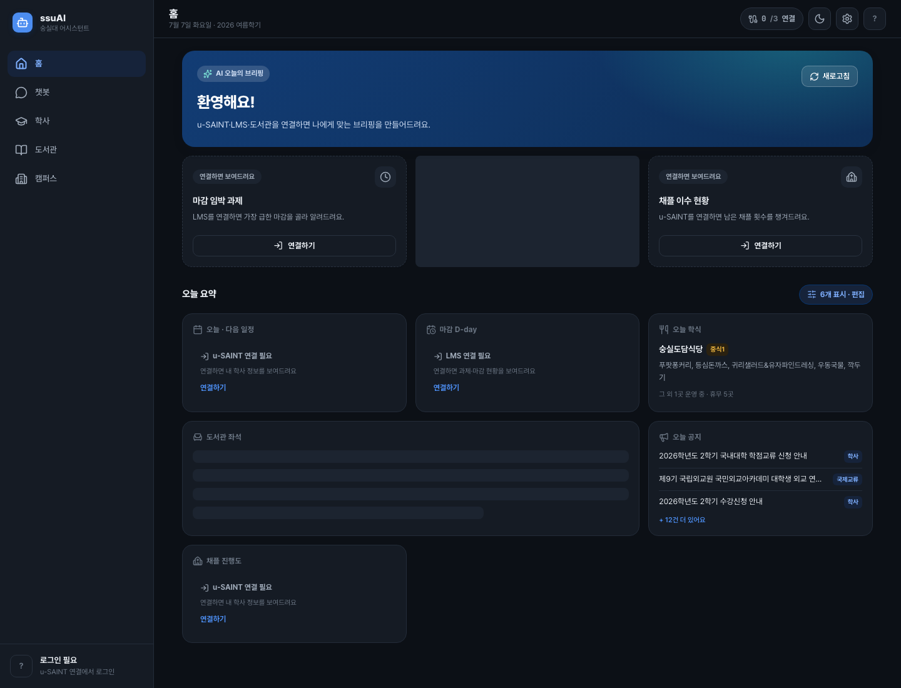
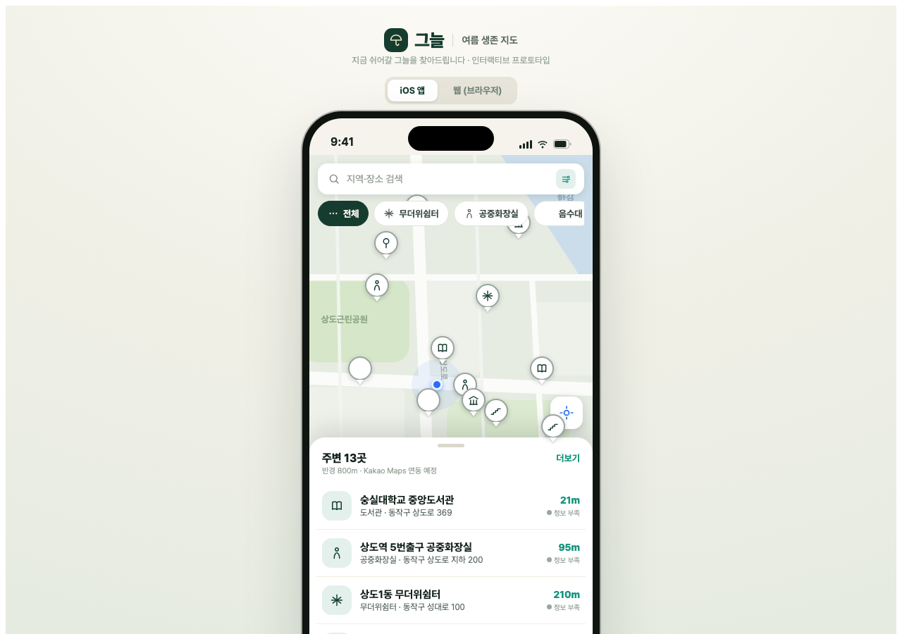
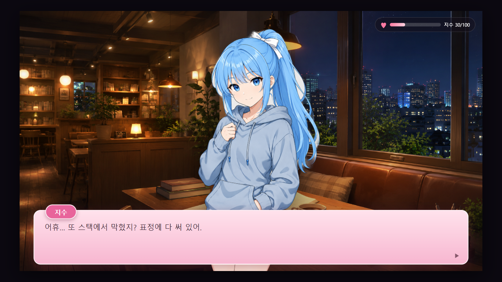
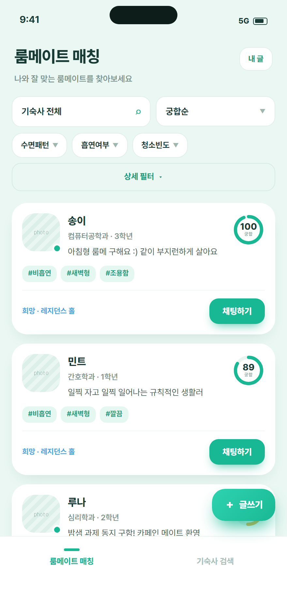

AI를 화면 장식이 아니라 기능의 핵심에 둠
LangGraph 멀티에이전트, 공식 출처 기반 RAG, AI 자유서술 채점, 임베딩 게이트웨이처럼 모델 호출이 제품 동작을 바꾸는 프로젝트를 구현했다.

CODEGATE 2026 AI Startup Hackathon Portfolio
AI 에이전트, MCP 서버, 위치 기반 MVP, 보안 하드닝까지 직접 설계하고 배포한 풀스택 개발자입니다.
Why I Fit CODEGATE
코드게이트 AI 스타트업 해커톤의 1차 심사는 기획서, 대표자 포트폴리오, 프로젝트 레퍼런스를 함께 본다. 그래서 이 사이트는 단순 소개가 아니라 MVP 구현력, 보안 감각, AI 활용의 본질성을 바로 검토할 수 있게 구성했다.
LangGraph 멀티에이전트, 공식 출처 기반 RAG, AI 자유서술 채점, 임베딩 게이트웨이처럼 모델 호출이 제품 동작을 바꾸는 프로젝트를 구현했다.
지도, 챗봇, 키오스크, 미연시 학습 콘텐츠를 모두 작은 수직 슬라이스로 먼저 완성한 뒤 테스트와 배포를 붙였다.
HITL 승인, fail-closed API key gate, CSRF origin guard, rate limit, thread ownership, credential 암호화, 비밀 스캔을 실제 코드와 문서에 남겼다.
Selected Work
Claude, ChatGPT 같은 범용 AI는 학교의 개인 시간표, 성적, LMS 과제, 도서관 대출·좌석 같은 데이터를 직접 다룰 수 없다. 이 프로젝트는 학교 데이터를 MCP 도구와 안전한 인증 세션으로 연결해, 웹 챗봇과 외부 AI 클라이언트가 실제 캠퍼스 업무를 수행하게 만든다.
학식, 공지, 도서관 좌석, 도서 검색, 시간표, 성적, 졸업요건, LMS 과제를 자연어로 조회.
52개 MCP 도구, LangGraph 멀티에이전트, HITL 승인, k3s GitOps 운영과 보안 하드닝.


자료구조를 미연시 구조로 배우는 AX 인터랙티브 콘텐츠. 대사는 사람이 쓰고 AI는 자유서술 답안을 채점만 하도록 제한해 오교육 위험을 낮췄다.
스택, 큐, 트리, 그래프 같은 개념을 대화·선택지·퀴즈·엔딩 흐름으로 학습.
LLM 채점 범위 제한, 결정론 게임 엔진, 시나리오 완주 테스트와 E2E 검증.

학생이 학교, 지역, 소득분위, 성적, 사회적 배려사항, 생활 습관을 입력하면 지원 가능한 기숙사와 적합한 룸메이트를 함께 찾는 학생 생활 서비스. 프론트엔드 전체와 룸메이트 매칭 백엔드 도메인을 담당했다.
지원 가능 기숙사 목록, 비용·식사·거리·모집기간 비교, 룸메이트 궁합 점수와 채팅.
Next.js 모바일 앱, mock/real API 전환, Spring 매칭 도메인, Stable Roommates 알고리즘.
CODEGATE Proposal
고령층, 장애인, 디지털 기기 사용이 익숙하지 않은 사용자가 키오스크 앞에서 말로 주문하고, AI가 메뉴 의도를 구조화해 화면 조작을 안내하는 음성 기반 주문 보조 서비스다. 해커톤 당일 사전 제작 코드는 쓰지 않고, 신규 코드로 웹 키오스크와 AI 주문 파서를 구현하는 범위를 제안한다.
Evidence Archive
LangGraph, MCP, RAG, 임베딩 게이트웨이, AI grader, LLM fallback, HITL 승인.
Spring Boot, Java/Kotlin, FastAPI, PostgreSQL/PostGIS/pgvector, Redis, JPA, Flyway.
Next.js, TypeScript, Tailwind, TanStack Query, PWA, 모바일 UX, 접근성 고려.
Docker, k3s, ArgoCD, Helm, AWS ECS/RDS, Terraform, OIDC, gitleaks, rate limit.
RISC-V 시뮬레이터, 인터프리터, POSIX 파일 도구, 네트워크 소켓, PyTorch 모델.
음성 키오스크 매크로, 팀 API 계약, 실시간 WebSocket/STT/TTS 연동 설계 경험.